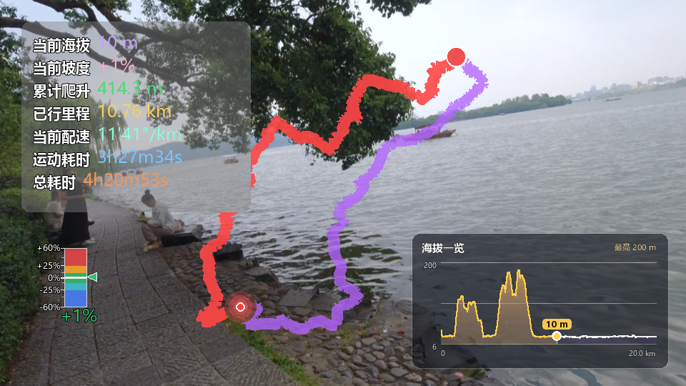

轨迹视频 · 美化方案
以下所有实例均使用 test.kml 真实轨迹（9.95 km，海拔 18–348 m，进度固定在 55%）
叠加在真实徒步画面上渲染。计算逻辑、布局参数、透明 MOV 输出全部不变，只改绘制外观。
页面底部为可交互组合演示，勾选特性实时预览。
现状当前效果诊断

- 线条扁平：纯色描边、无轮廓无光晕，杂乱背景上辨识度一般
- 配色孤立：紫 + 红与画面、地形没有关联，略显生硬
- 面板无层级：7 行同字号等宽排列，且数值溢出灰色背景条（见左图）
- 风格不统一：灰面板 / 深色海拔卡 / 彩色坡度尺，三套视觉语言并存
- 起终点无文字：裸圆点观众认不出含义
- 当前位置标记：三层同心圆偏"仪器感"，缺乏活力
方案一描边 + 柔光轨迹 性价比最高，改动最小
轨迹下方垫一层深色半透明粗描边（任何背景上都清晰分离），已走部分再叠两层同色递减光晕。
线条转角改用圆角连接消除毛刺。颜色体系完全沿用现有可配置色。
PIL 实现：d.line(宽度+6, 黑40%) 打底 → 主线 → 宽度×2.2, alpha 25% 光晕两层；逐帧 O(n)，多进程渲染无额外状态。
方案二海拔渐变轨迹 路线地形一眼读懂
整条轨迹按海拔连续着色（低海拔青绿 → 高海拔橙红），未走部分降低饱和度保持克制，
已走部分全饱和 + 柔光。观众不看数据面板也能感知「哪里在爬坡、哪里是山顶」。
同一管线也可切换为配速渐变（快冷色 / 慢暖色）。
PIL 实现：逐小段 d.line 单色绘制（海拔色表预计算 256 级），已走/未走两段循环；点数 ~4k 时单帧增加约 2-3ms。
方案三主题配色预设 一键换整套气质
在描边+柔光基础上提供 3 套预设：山野橙（暖橙已走/米白未走，户外杂志感）、
荧光青（青蓝已走/浅灰未走，科技感）、经典红紫（现有配色 + 描边柔光）。
预设只是默认色组合，仍可在 GUI 取色器里逐项微调。
实现：一组 THEMES 字典 + 「外观与标注设置」里的预设下拉，写入现有 4 个颜色键，零新增持久化字段。
方案四当前位置标记升级 画面焦点
白芯 + 彩色环 + 径向柔光球，外侧一圈呼吸脉冲环（随视频帧缩放扩散），
行进方向加一个淡淡的扇形光锥。让观众视线始终锁定当前位置。
右图可看到脉冲动画；静止（暂停段）时脉冲自动停、只保留柔光球。
现在：三层同心圆
柔光球 + 脉冲环 + 方向光锥
PIL 实现：柔光 = 径向渐变贴图（预生成一次，随缩放缓存）；脉冲相位 = frame_idx / fps 的纯函数，多进程安全；光锥 = 相邻点求切向画扇形。
方案五起点 / 终点文字标签
裸圆点升级为圆点 + 胶囊文字标签（绿「起点」/ 红「终点」，黑底白字胶囊——
与关键节点标签同一语言）。结束帧观众也能立刻读懂画面。
实现：复用关键节点胶囊标签绘制代码，仅两处调用 + 「显示起终点标签」开关。
方案六数据面板排版升级 与海拔一览图统一风格
现状 7 行同字号平铺、数值溢出背景条。改为深色玻璃卡片（与海拔一览图同款圆角深色底）：
主数据「当前海拔」大字号置顶，其余数据 2 列网格小字号排布，顶部一条细进度发丝线显示完成度。
信息密度不变，层级清晰，占地面积反而更小。
实现：新增 panel_style="card" 分支；7 个数据项的 checkbox 开关逐套沿用，仅在卡片布局里重排。